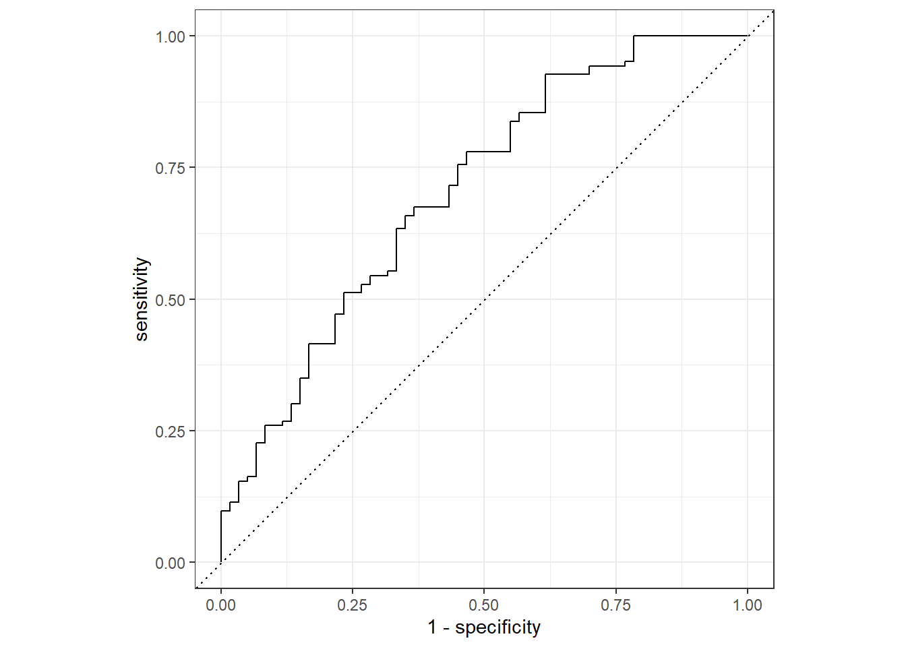
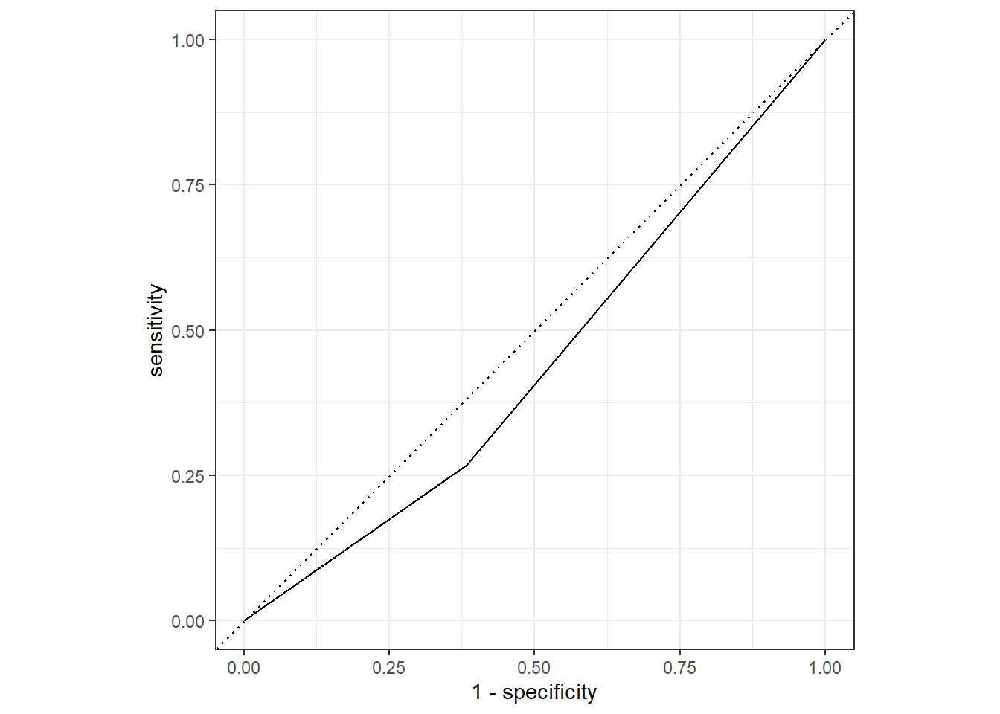

## Load packages
library(tidyverse)── Attaching core tidyverse packages ──────────────────────── tidyverse 2.0.0 ──
✔ dplyr 1.1.0 ✔ readr 2.1.4
✔ forcats 1.0.0 ✔ stringr 1.5.0
✔ ggplot2 3.4.1 ✔ tibble 3.2.0
✔ lubridate 1.9.2 ✔ tidyr 1.3.0
✔ purrr 1.0.1
── Conflicts ────────────────────────────────────────── tidyverse_conflicts() ──
✖ dplyr::filter() masks stats::filter()
✖ dplyr::lag() masks stats::lag()
ℹ Use the conflicted package (<http://conflicted.r-lib.org/>) to force all conflicts to become errorslibrary(tidymodels)── Attaching packages ────────────────────────────────────── tidymodels 1.0.0 ──
✔ broom 1.0.4 ✔ rsample 1.1.1
✔ dials 1.1.0 ✔ tune 1.0.1
✔ infer 1.0.4 ✔ workflows 1.1.3
✔ modeldata 1.1.0 ✔ workflowsets 1.0.0
✔ parsnip 1.0.4 ✔ yardstick 1.1.0
✔ recipes 1.0.5
── Conflicts ───────────────────────────────────────── tidymodels_conflicts() ──
✖ scales::discard() masks purrr::discard()
✖ dplyr::filter() masks stats::filter()
✖ recipes::fixed() masks stringr::fixed()
✖ dplyr::lag() masks stats::lag()
✖ yardstick::spec() masks readr::spec()
✖ recipes::step() masks stats::step()
• Use tidymodels_prefer() to resolve common conflicts.### Pathing(?)
library(here)here() starts at C:/Users/conno/Documents/MADA/connorross-MADA-portfoliowrangled_data_location <- here("fluanalysis", "data", "processed_data", "SympActAny_new.rds")
SympActAny_new <- readRDS(wrangled_data_location)
## Splitting the wrangled dataset.
glimpse(SympActAny_new)Rows: 730
Columns: 32
$ SwollenLymphNodes <fct> Yes, Yes, Yes, Yes, Yes, No, No, No, Yes, No, Yes, Y…
$ ChestCongestion <fct> No, Yes, Yes, Yes, No, No, No, Yes, Yes, Yes, Yes, Y…
$ ChillsSweats <fct> No, No, Yes, Yes, Yes, Yes, Yes, Yes, Yes, No, Yes, …
$ NasalCongestion <fct> No, Yes, Yes, Yes, No, No, No, Yes, Yes, Yes, Yes, Y…
$ CoughYN <fct> Yes, Yes, No, Yes, No, Yes, Yes, Yes, Yes, Yes, No, …
$ Sneeze <fct> No, No, Yes, Yes, No, Yes, No, Yes, No, No, No, No, …
$ Fatigue <fct> Yes, Yes, Yes, Yes, Yes, Yes, Yes, Yes, Yes, Yes, Ye…
$ SubjectiveFever <fct> Yes, Yes, Yes, Yes, Yes, Yes, Yes, Yes, Yes, No, Yes…
$ Headache <fct> Yes, Yes, Yes, Yes, Yes, Yes, No, Yes, Yes, Yes, Yes…
$ Weakness <fct> Mild, Severe, Severe, Severe, Moderate, Moderate, Mi…
$ WeaknessYN <fct> Yes, Yes, Yes, Yes, Yes, Yes, Yes, Yes, Yes, Yes, Ye…
$ CoughIntensity <fct> Severe, Severe, Mild, Moderate, None, Moderate, Seve…
$ CoughYN2 <fct> Yes, Yes, Yes, Yes, No, Yes, Yes, Yes, Yes, Yes, Yes…
$ Myalgia <fct> Mild, Severe, Severe, Severe, Mild, Moderate, Mild, …
$ MyalgiaYN <fct> Yes, Yes, Yes, Yes, Yes, Yes, Yes, Yes, Yes, Yes, Ye…
$ RunnyNose <fct> No, No, Yes, Yes, No, No, Yes, Yes, Yes, Yes, No, No…
$ AbPain <fct> No, No, Yes, No, No, No, No, No, No, No, Yes, Yes, N…
$ ChestPain <fct> No, No, Yes, No, No, Yes, Yes, No, No, No, No, Yes, …
$ Diarrhea <fct> No, No, No, No, No, Yes, No, No, No, No, No, No, No,…
$ EyePn <fct> No, No, No, No, Yes, No, No, No, No, No, Yes, No, Ye…
$ Insomnia <fct> No, No, Yes, Yes, Yes, No, No, Yes, Yes, Yes, Yes, Y…
$ ItchyEye <fct> No, No, No, No, No, No, No, No, No, No, No, No, Yes,…
$ Nausea <fct> No, No, Yes, Yes, Yes, Yes, No, No, Yes, Yes, Yes, Y…
$ EarPn <fct> No, Yes, No, Yes, No, No, No, No, No, No, No, Yes, Y…
$ Hearing <fct> No, Yes, No, No, No, No, No, No, No, No, No, No, No,…
$ Pharyngitis <fct> Yes, Yes, Yes, Yes, Yes, Yes, Yes, No, No, No, Yes, …
$ Breathless <fct> No, No, Yes, No, No, Yes, No, No, No, Yes, No, Yes, …
$ ToothPn <fct> No, No, Yes, No, No, No, No, No, Yes, No, No, Yes, N…
$ Vision <fct> No, No, No, No, No, No, No, No, No, No, No, No, No, …
$ Vomit <fct> No, No, No, No, No, No, Yes, No, No, No, Yes, Yes, N…
$ Wheeze <fct> No, No, No, Yes, No, Yes, No, No, No, No, No, Yes, N…
$ BodyTemp <dbl> 98.3, 100.4, 100.8, 98.8, 100.5, 98.4, 102.5, 98.4, …## For reproducibility
set.seed(1)
## Put 3/4 of the data into training set
data_split <- initial_split(SympActAny_new, prop = 3/4)
## Create data frame for two sets
train_data <- training(data_split)
test_data <- testing(data_split)
## New recipe
new_flu <- recipe(Nausea ~ ., data = train_data)
## Set engine/regression model
lr_mod <- logistic_reg() %>%
set_engine("glm")
## Create workflow
flu_wflow <- workflow() %>%
add_model(lr_mod) %>%
add_recipe(new_flu)
flu_wflow══ Workflow ════════════════════════════════════════════════════════════════════
Preprocessor: Recipe
Model: logistic_reg()
── Preprocessor ────────────────────────────────────────────────────────────────
0 Recipe Steps
── Model ───────────────────────────────────────────────────────────────────────
Logistic Regression Model Specification (classification)
Computational engine: glm ## Fit train data
flu_fit <- flu_wflow %>%
fit(data = train_data)
flu_fit %>%
extract_fit_parsnip() %>%
tidy()# A tibble: 38 × 5
term estimate std.error statistic p.value
<chr> <dbl> <dbl> <dbl> <dbl>
1 (Intercept) 9.58 9.78 0.980 0.327
2 SwollenLymphNodesYes -0.156 0.226 -0.688 0.492
3 ChestCongestionYes 0.258 0.250 1.03 0.301
4 ChillsSweatsYes 0.274 0.346 0.793 0.428
5 NasalCongestionYes 0.545 0.300 1.82 0.0691
6 CoughYNYes 0.163 0.632 0.258 0.796
7 SneezeYes -0.0105 0.245 -0.0427 0.966
8 FatigueYes 0.702 0.457 1.54 0.125
9 SubjectiveFeverYes 0.320 0.263 1.21 0.225
10 HeadacheYes 0.474 0.339 1.40 0.162
# … with 28 more rows## Predict
predict(flu_fit, test_data)Warning in predict.lm(object, newdata, se.fit, scale = 1, type = if (type == :
prediction from a rank-deficient fit may be misleading# A tibble: 183 × 1
.pred_class
<fct>
1 No
2 Yes
3 No
4 No
5 Yes
6 No
7 Yes
8 Yes
9 Yes
10 No
# … with 173 more rows## Augment
flu_aug <- augment(flu_fit, test_data)Warning in predict.lm(object, newdata, se.fit, scale = 1, type = if (type == :
prediction from a rank-deficient fit may be misleading
Warning in predict.lm(object, newdata, se.fit, scale = 1, type = if (type == :
prediction from a rank-deficient fit may be misleadingflu_aug %>%
select(Nausea, .pred_No, .pred_Yes)# A tibble: 183 × 3
Nausea .pred_No .pred_Yes
<fct> <dbl> <dbl>
1 Yes 0.774 0.226
2 Yes 0.0292 0.971
3 Yes 0.849 0.151
4 No 0.640 0.360
5 Yes 0.165 0.835
6 No 0.790 0.210
7 Yes 0.375 0.625
8 Yes 0.0636 0.936
9 Yes 0.253 0.747
10 Yes 0.751 0.249
# … with 173 more rows## ROC curve
flu_aug %>%
roc_curve(Nausea, .pred_No) %>%
autoplot()Warning: Returning more (or less) than 1 row per `summarise()` group was deprecated in
dplyr 1.1.0.
ℹ Please use `reframe()` instead.
ℹ When switching from `summarise()` to `reframe()`, remember that `reframe()`
always returns an ungrouped data frame and adjust accordingly.
ℹ The deprecated feature was likely used in the yardstick package.
Please report the issue at <https://github.com/tidymodels/yardstick/issues>.
flu_aug %>%
roc_auc(Nausea, .pred_No)# A tibble: 1 × 3
.metric .estimator .estimate
<chr> <chr> <dbl>
1 roc_auc binary 0.704# RUNNY NOSE
new_flu_rn <- recipe(Nausea ~ RunnyNose, data = train_data)
## Create workflow
flu_wflow2 <- workflow() %>%
add_model(lr_mod) %>%
add_recipe(new_flu_rn)
flu_wflow2══ Workflow ════════════════════════════════════════════════════════════════════
Preprocessor: Recipe
Model: logistic_reg()
── Preprocessor ────────────────────────────────────────────────────────────────
0 Recipe Steps
── Model ───────────────────────────────────────────────────────────────────────
Logistic Regression Model Specification (classification)
Computational engine: glm ## Fit train data
flu_fit_rn <- flu_wflow2 %>%
fit(data = train_data)
flu_fit_rn %>%
extract_fit_parsnip() %>%
tidy()# A tibble: 2 × 5
term estimate std.error statistic p.value
<chr> <dbl> <dbl> <dbl> <dbl>
1 (Intercept) -0.772 0.173 -4.47 0.00000794
2 RunnyNoseYes 0.250 0.202 1.24 0.216 ## Predict
predict(flu_fit_rn, test_data)# A tibble: 183 × 1
.pred_class
<fct>
1 No
2 No
3 No
4 No
5 No
6 No
7 No
8 No
9 No
10 No
# … with 173 more rows## Augment
flu_aug_rn <- augment(flu_fit_rn, test_data)
flu_aug_rn %>%
select(Nausea, .pred_No, .pred_Yes)# A tibble: 183 × 3
Nausea .pred_No .pred_Yes
<fct> <dbl> <dbl>
1 Yes 0.628 0.372
2 Yes 0.684 0.316
3 Yes 0.628 0.372
4 No 0.628 0.372
5 Yes 0.628 0.372
6 No 0.628 0.372
7 Yes 0.628 0.372
8 Yes 0.684 0.316
9 Yes 0.684 0.316
10 Yes 0.628 0.372
# … with 173 more rows## ROC curve
flu_aug_rn %>%
roc_curve(Nausea, .pred_No) %>%
autoplot()
flu_aug_rn %>%
roc_auc(Nausea, .pred_No)# A tibble: 1 × 3
.metric .estimator .estimate
<chr> <chr> <dbl>
1 roc_auc binary 0.442